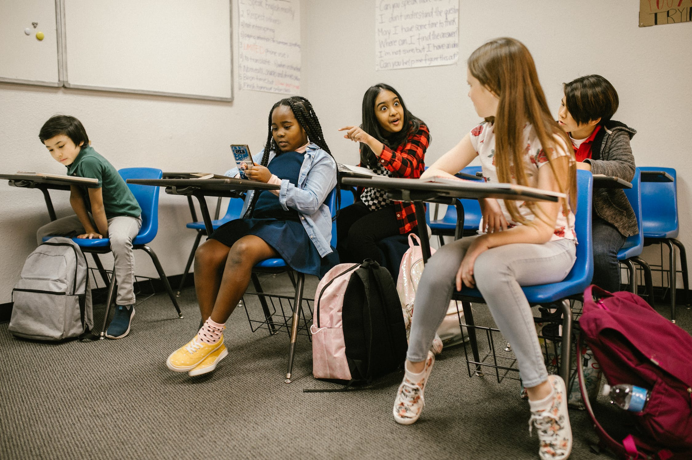
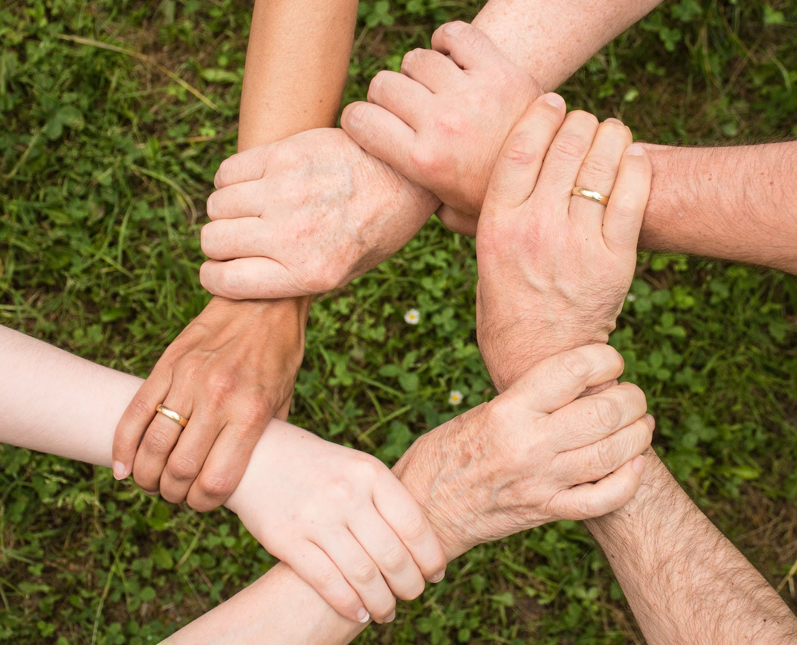

Hvis du vil lære mer om dette temaet kan du finne nyttig informasjon her.
Internettet er en voksende infrastruktur i den moderne verden. Nettopp som en form for infrastruktur kan internettet være både inkluderende og ekskluderende, særlig i en politisk kontekst. Verden blir stadig mer og mer avhengig av teknologien, og den brukes på de fleste områder i ethvert samfunn. Internettet er i dag blitt koblingen mellom det enkelte mennesket, store institusjoner og den politiske makten - se nettside.
Teknologien utvikler seg i svært ulikt tempo i forskjellige deler av verden. Mens vi i vesten tar internettet som en selvfølge,
er det fremdeles en fremmed teknologi mange steder. Det kan stilles spørsmål til hvor rettferdig det er at internett er blitt til den
ledende informasjonskanalen når ikke alle har lik tilgang til det -
se nettside.
Politiske kampanjer som hovedsakelig foregår over internett, vil automatisk nå ut til en målgruppe som har ressursene til å motta
denne informasjonen og dermed også ekskludere andre som ikke har det.
En slik politisk kampanje som foregår i stor grad eller kun på internettet, som i utgangspunktet er med den gode
intensjon om å nå ut til flest mulig mennesker,
vil det ikke oppnå sin hensikt så lenge internett ikke er tilgjengelig for alle -
se nettside
Den som er med å utvikle ny teknologi bærer også et stort ansvar for at det man skaper er til samfunnets gode. Det vil alltid være mulige konsekvenser av nye teknologiske oppfinnelser. Men ligger alt ansvaret på utvikleren eller ligger noe av ansvaret også på oss som brukere av produktene?
Det finnes både ønskede og uønskede konsekvenser av teknologiske utviklinger. Et produkt kan lages med gode intensjoner, men tas feil imot av sine brukere. Ta sosiale medier for eksempel; teknologien er laget med ønske om å forene mennesker, å lage plattformer hvor mennesker kan møte likesinnede, holde kontakt med hverandre og fremme mellommenneskelige forhold. Likevel ser vi i dag en grad av mistillit mellom brukere av sosiale medier etter at ønsket fra annonsører om å tjene mest mulig penger går på bekostning av vår brukeropplevelse på plattformene.